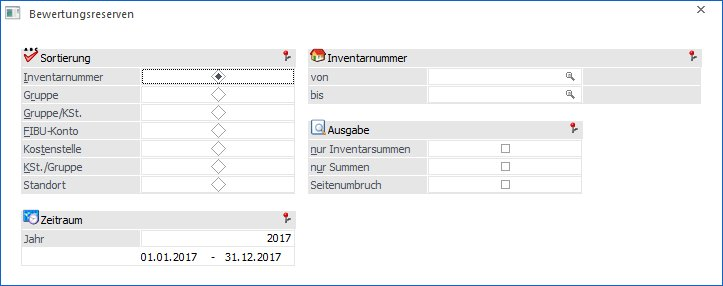
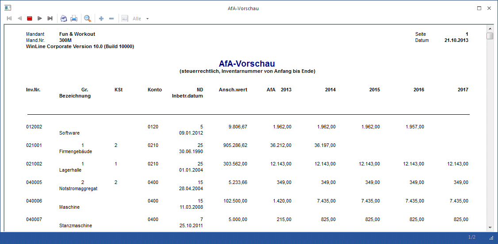
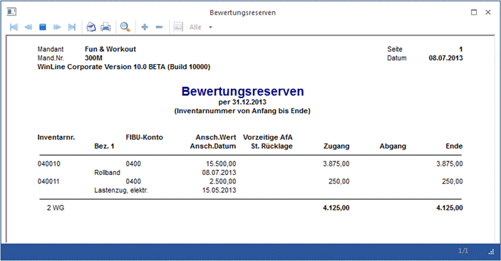
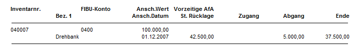
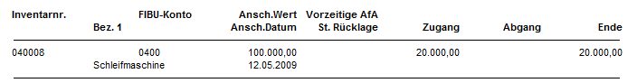

Um eine Übersicht der in den Anlagegütern vorhandenen Bewertungsreserven (entstanden aus vorzeitiger AfA oder stiller Reserve) zu erhalten, wählen Sie den Menüpunkt
1 Auswertungen
1 Bewertungsreserven

Auswertekriterien
Ø Sortierung
Es besteht die Möglichkeit eine Sortierung nach der
ü Inventarnummer
ü Gruppe (Anlagengruppe, der das Inventargut im Anlagenstamm zugeordnet wurde)
ü Gruppe/KSt. (innerhalb der Gruppe nach der Kostenstelle)
ü FIBU-Konto
ü Kostenstelle
ü KSt./Gruppe (innerhalb der Kostenstelle nach der Gruppe)
ü Standort
vorzunehmen.
Ø von - bis
Je nachdem, welches Sortierkriterium Sie gewählt haben, kann der Ausdruck durch hier einzugebende Grenzen eingeschränkt werden. Haben Sie nach der Gruppe sortiert, zeigt Ihnen der Matchcode alle zur Verfügung stehenden Anlagengruppen. Richtet sich die Sortierung nach dem FIBU-Konto, erhalten Sie über den Matchcode eine Übersicht aller in Frage kommenden FIBU-Konten. Das gleiche gilt für die Sortierung nach Kostenstellen (Kostenstelle von - bis) und nach der Inventarnummer (Inventarnummer von - bis). Für die Eingrenzung von - bis Standort steht eine Combobox mit den vorhandenen Standorten zur Verfügung.
Ø nur Inventarsummen
Es werden nur die Summen pro Inventargut ausgegeben, d. h. sollte es Subanlagen dazu geben, werden diese NICHT angezeigt.
Ø nur Summen
Ist diese Checkbox aktiviert, werden bei der Bewertungsreserve nur Summenwerte angezeigt.
Ø Seitenumbruch
Durch Aktivierung der Checkbox erhalten Sie einen Seitenvorschub pro Sortierung, z.B. pro Gruppe.
Ø Jahr
Hier wählen Sie das Jahr, für das die Auswertung errechnet werden soll. Voraussetzung ist, dass das auszuwertende Jahr mit einer WinLine ab Version 8.0 abgeschrieben wurde.
Buttons

Ø Ausgabe Bildschirm
Standardmäßig wird die Ausgabe auf dem Bildschirm vorgeschlagen, die auch durch Drücken der F5-Taste gestartet werden kann.
Ø Ausgabe Drucker
Die Auswertung wird am Drucker ausgegeben.
Ø Ausgabe Tabelle
Wenn die Option "Ausgabe Tabelle" gewählt wird, dann wird die Liste in einer Tabelle dargestellt. Die Tabelle hat die gleichen Funktionen wie Excel (z.B. Bilden von Summen) und kann auch als XLS-Datei exportiert werden (über rechte Maustaste, Exportiere Tabelle), wo die Daten dann auch weiterbearbeitet werden können.
Ø Ende
Das Fenster wird geschlossen, ohne dass eine Auswertung angezeigt wird.
Ø Filter bearbeiten
Wird der Filter-Button angeklickt, kann ein neuer Filter definiert oder ein bestehender Filter gewählt werden. Dort kann eingestellt werden, nach welchen frei definierbaren Kriterien die Selektion durchgeführt werden soll (Details entnehmen Sie dem Kapitel Filter - Assistent).
Wurden in diesem Fenster bereits Filter angelegt, kann aus der Auswahllistbox ein bestehender Filter gewählt werden. Es werden immer nur die Filter angezeigt, die für das gerade aktive Fenster angelegt wurden.

Unterschied zwischen stiller Rücklage und vorzeitiger AfA
Die stille Rücklage wird linear zur normalen Abschreibung abgeschrieben. D.h., hat ein Anlagegut 10% Abschreibung, dann werden pro Jahr 10% des Anschaffungswertes und 10% der stillen Rücklage abgeschrieben.
Bei der vorzeitigen AfA wird der Anschaffungswert der Anlage gleich im ersten Jahr um die vorzeitige AfA verringert. Die vorzeitige AfA enthält auch die normale Abschreibung, sie wird nicht zusätzlich auf die vorz. AfA addiert.
Die vorzeitige AfA wird im ersten Jahr auf der Bewertungsreservenliste als Zugang ausgewiesen.
Wenn der Buchwert bis auf 0 abgeschrieben ist und somit keine Abschreibung mehr möglich ist, wird die vorzeitige AfA abgeschrieben und dann auf der Bewertungsreservenliste als Abgang ausgewiesen.
Beträgt die vorzeitige AfA z.B. 30% und die Abschreibung 10% würde der Buchwert im ersten Jahr um 30% verringert. Als Bewertungsreserve werden 20 % unter Zugang ausgewiesen. Jetzt werden jedes Jahr 10% Normal-AfA abgeschrieben, bis der Buchwert 0 erreicht hat. Erst dann werden die restlichen 20% der vorzeitigen AfA abgeschrieben und unter den Bewertungsreserven als Abgang ausgewiesen.
Hinweis
Die Bewertungsreserve für die vorzeitige Abschreibung lt. Konjunkturbelebungsgesetz 2009 darf nur die Differenz zwischen vorz. AfA und Normal-AfA betragen.
Auswertung

In der Liste erhalten Sie den momentanen Wert der stillen Rücklage bzw. der vorzeitigen AfA (z.B. stille Rücklage - bisherige AfA der stillen Rücklage).
In den beiden Spalten Eingang und Abgang erhalten Sie immer den Wert der in diesem Jahr von der Bewertungsreserve abgegangen bzw. zugegangen ist.
Aus der Spalte Ende können Sie ersehen, wie hoch Ihre momentane Bewertungsreserve pro Anlagegut ist.
Aus der Summenzeile können Sie erkennen, wie viel Ihre Bewertungsreserve für die gesamten Wirtschaftsgüter beträgt.
Beispiel 1
Ø Anlagegut Maschine mit einer stillen Rücklage
Ansch. Wert: € 100.000,--
Nutzungsdauer: 10 Jahre
Stille Rücklage: € 50.000,--
Ansch. und Inbetriebnahme: 2. Halbjahr
2 Jahre abschreiben
Im ersten Jahr werden € 2.500,-- von der stillen Rücklage abgeschrieben (50.000 / 10 J. ND / 2) und im zweiten Jahr werden € 5.000,-- abgeschrieben (50.000 / 10 ND).
Sie erhalten dadurch folgende Werte bei der Bewertungsreserve:

Die stille Rücklage beträgt ursprünglich € 50.000,--, davon wird die bisherige AfA abgezogen, hier € 7.500,-- (2.500,-- vom 1. Jahr und 5.000,-- vom 2. Jahr), daraus ergibt sich die angegebene stille Rücklage von 42.500,-- (es wird aber weiterhin von der ursprünglichen Rücklage von 50.000,-- abgeschrieben).
In der Spalte Abgang wird der Wert angezeigt, der in diesem Jahr von der stillen Rücklage abgegangen ist. In diesem Fall ist es die AfA von 5.000,--.
Beispiel 2
Ø Anlagegut Maschine mit einer vorzeitigen AfA
Ansch. Wert: € 100.000,--
Nutzungsdauer: 10 Jahre
Vorz. AfA: 30 % = € 30.000,--
Ansch. und Inbetriebnahme: 1. Halbjahr
Im Anschaffungsjahr werden die 30 % vorzeitige Abschreibung vorgenommen. Die Bewertungsreserve für die vorzeitige Abschreibung lt. Konjunkturbelebungsgesetz 2009 darf nur die Differenz zwischen Vorz. AfA und Normal-AfA betragen. Daher werden 20.000,-- unter Zugang ausgewiesen.
Sie erhalten dadurch folgende Werte bei der Bewertungsreserve:
